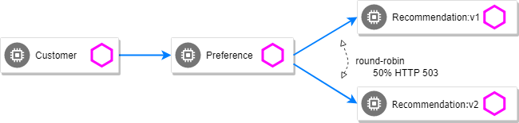
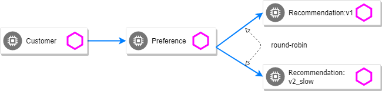

Fault Injection
Apply some chaos engineering by throwing in some HTTP errors or network delays. Understanding failure scenarios is a critical aspect of microservices architecture.
HTTP Error 503
By default, recommendation v1 and v2 are being round-robin load-balanced as that is the default behavior in Kubernetes.
kubectl get pods -l app=recommendation
NAME READY STATUS RESTARTS AGE
recommendation-v1-798bf87d96-d9d95 2/2 Running 4 11h
recommendation-v2-7bc4f7f696-d9j2m 2/2 Running 1 10hYou can inject 503’s, for approximately 50% of the requests.

kind: VirtualService
metadata:
name: recommendation
spec:
hosts:
- recommendation
http:
- route:
- destination:
host: recommendation
subset: app-recommendation
fault:
abort:
httpStatus: 503
percent: 50kubectl apply -f manifests/istio/fault-injection/recommendation-destination-rule.yml
kubectl apply -f manifests/istio/fault-injection/inject-error/recommendation-virtual-service-503.yml
curl $CUSTOMER_URL
customer => preference => recommendation v1 from '99634814-sf4cl': 88
curl $CUSTOMER_URL
customer => 503 preference => 503 fault filter abort
curl $CUSTOMER_URL
customer => preference => recommendation v2 from '2819441432-qsp25': 51Delay
The most insidious of possible distributed computing faults is not a "down" service but a service that is responding slowly, potentially causing a cascading failure in your network of services.
kind: VirtualService
metadata:
name: recommendation
spec:
hosts:
- recommendation
http:
- fault:
delay:
fixedDelay: 7.000s
percent: 50
route:
- destination:
host: recommendation
subset: app-recommendationkubectl apply -f manifests/istio/fault-injection/delay/recommendation-virtual-service-delay.ymlAnd hit the customer endpoint
while true; do curl $CUSTOMER_URL; sleep .5; doneYou will notice many requests to the customer endpoint now have a delay. If you are monitoring the logs for recommendation v1 and v2, you will also see the delay happens BEFORE the recommendation service is actually called
kubectl logs -l app=recommendation -c recommendationClean up
kubectl delete -f manifests/istio/fault-injection/recommendation-destination-rule.yml
kubectl delete -f manifests/istio/fault-injection/delay/recommendation-virtual-service-delay.ymlRetry
Instead of failing immediately, retry the Service N more times
We will make pod recommendation-v2 fail 100% of the time. Get one of the pod names from your system and replace on the following command accordingly:
kubectl exec -it $(kubectl get pods|grep recommendation-v2|awk '{ print $1 }'|head -1) \
-c recommendation -- curl 127.0.0.1:8080/misbehaveThis is a special endpoint that will make our application return only 503s.
Now, if you hit the customer endpoint several times, you should see some 503's

while true; do curl $CUSTOMER_URL; sleep .5; done
customer => preference => recommendation v1 from 'b87789c58-h9r4s': 864
customer => 503 preference => 503 recommendation misbehavior from '6f64f9c5b-ltrhl'
customer => preference => recommendation v1 from 'b87789c58-h9r4s': 865
customer => 503 preference => 503 recommendation misbehavior from '6f64f9c5b-ltrhl'
customer => preference => recommendation v1 from 'b87789c58-h9r4s': 866
customer => 503 preference => 503 recommendation misbehavior from '6f64f9c5b-ltrhl'
customer => preference => recommendation v1 from 'b87789c58-h9r4s': 867
customer => 503 preference => 503 recommendation misbehavior from '6f64f9c5b-ltrhl'
customer => preference => recommendation v1 from 'b87789c58-h9r4s': 868
customer => 503 preference => 503 recommendation misbehavior from '6f64f9c5b-ltrhl'
customer => preference => recommendation v1 from 'b87789c58-h9r4s': 869
customer => 503 preference => 503 recommendation misbehavior from '6f64f9c5b-ltrhl'Now add the retry rule
kind: VirtualService
metadata:
name: recommendation
spec:
hosts:
- recommendation
http:
- route:
- destination:
host: recommendation
retries:
attempts: 3
perTryTimeout: 2skubectl apply -f manifests/istio/fault-injection/retry/recommendation-virtual-service-v2_retry.ymlYou will see it work every time because Istio will retry the recommendation service and it will land on v1 only.

while true; do curl $CUSTOMER_URL; sleep .5; done
customer => preference => recommendation v1 from '2036617847-m9glz': 196
customer => preference => recommendation v1 from '2036617847-m9glz': 197
customer => preference => recommendation v1 from '2036617847-m9glz': 198You can see the active Virtual Services via
kubectl get virtualservices -o yamlNow, delete the retry rule and see the old behavior, where v2 throws 503s
kubectl delete virtualservice recommendation
while true; do curl $CUSTOMER_URL; sleep .5; done
customer => preference => recommendation v1 from 'b87789c58-h9r4s': 1118
customer => preference => recommendation v1 from 'b87789c58-h9r4s': 1119
customer => preference => recommendation v1 from 'b87789c58-h9r4s': 1120
customer => 503 preference => 503 recommendation misbehavior from '6f64f9c5b-ltrhl'
customer => preference => recommendation v1 from 'b87789c58-h9r4s': 1121
customer => 503 preference => 503 recommendation misbehavior from '6f64f9c5b-ltrhl'
customer => preference => recommendation v1 from 'b87789c58-h9r4s': 1122
customer => 503 preference => 503 recommendation misbehavior from '6f64f9c5b-ltrhl'
customer => preference => recommendation v1 from 'b87789c58-h9r4s': 1123
customer => 503 preference => 503 recommendation misbehavior from '6f64f9c5b-ltrhl'
customer => preference => recommendation v1 from 'b87789c58-h9r4s': 1124
customer => 503 preference => 503 recommendation misbehavior from '6f64f9c5b-ltrhl'
customer => preference => recommendation v1 from 'b87789c58-h9r4s': 1125
customer => 503 preference => 503 recommendation misbehavior from '6f64f9c5b-ltrhl'
customer => preference => recommendation v1 from 'b87789c58-h9r4s': 1126
customer => 503 preference => 503 recommendation misbehavior from '6f64f9c5b-ltrhl'Now, make the pod v2 behave well again
kubectl exec -it $(kubectl get pods|grep recommendation-v2|awk '{ print $1 }'|head -1) \
-c recommendation -- curl 127.0.0.1:8080/behaveThe application is back to random load-balancing between v1 and v2
while true; do curl $CUSTOMER_URL; sleep .5; done
customer => preference => recommendation v1 from '2039379827-h58vw': 129
customer => preference => recommendation v2 from '2036617847-m9glz': 207
customer => preference => recommendation v1 from '2039379827-h58vw': 130Timeout
Wait only N seconds before giving up and failing. At this point, no other virtual service nor destination rule should be in effect.
First, introduce some wait time in recommendation v2 by deploying a slow version making it a slow performer with a 3 second delay.
kubectl apply -f manifests/kubernetes/recommendation-v2_slow.ymlHit the customer endpoint a few times, to see the load-balancing between v1 and v2 but with v2 taking a bit of time to respond

while true; do curl $CUSTOMER_URL; sleep .5; doneThen add the timeout rule:
kind: VirtualService
metadata:
name: recommendation
spec:
hosts:
- recommendation
http:
- route:
- destination:
host: recommendation
timeout: 1.000skubectl apply -f manifests/istio/fault-injection/timeout/recommendation-virtual-service-timeout.ymlYou will see it return v1 OR "upstream request timeout" after waiting about 1 second
while true; do curl $CUSTOMER_URL; sleep .5; done
customer => 503 preference => 504 upstream request timeout
curl $CUSTOMER_URL 0.01s user 0.00s system 0% cpu 1.035 total
customer => preference => recommendation v1 from '2039379827-h58vw': 210
curl $CUSTOMER_URL 0.01s user 0.00s system 36% cpu 0.025 total
customer => 503 preference => 504 upstream request timeout
curl $CUSTOMER_URL 0.01s user 0.00s system 0% cpu 1.034 total